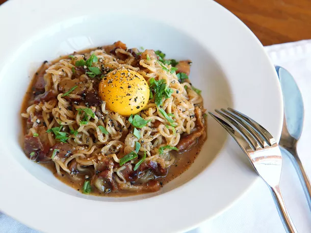

The Ramen Carbonara

Ingredients
- 6 to 8 slices bacon or pancetta, cut crosswise into ½-inch strips or lardons (4 to 6 ounces)
- 2 cups boiling water
- 3 tablespoons butter, plus more for frying eggs
- 1 cup grated Parmesan or pecorino, or a combination (about 4 ounces)
- 2 (3-ounce) packages ramen noodles (noodle blocks only; discard the seasoning packs)
- 2 eggs, whisked together until smooth
- Kosher salt and black pepper
- 2 whole eggs, at room temperature
Instructions
- In a large skillet (preferably nonstick), cook bacon over medium heat until fat is rendered and meat is cooked through. Adjust the heat as needed to prevent scorching. When bacon is cooked, use a slotted spoon to transfer it to a paper-towel-lined plate. Set aside.
- Pour off the extra bacon fat in the pan, leaving behind any browned bits stuck on the bottom. Return pan to medium-high heat and add boiling water, butter and half the cheese. Stir, scraping up bacon bits, and bring to a boil. Add noodle blocks and boil, gently separating the strands as they soften, until noodles are almost cooked through, about 3 minutes. The noodles will absorb some of the liquid, and there will be a thick broth in the pan. Keep the heat high; you want most of the liquid to evaporate.
- Reduce heat to low. Add whisked eggs, stir into noodles very well, and cook, stirring constantly and scraping the bottom of the pan, about 1 minute. The sauce should remain quite runny; the eggs will continue to cook after you remove them from the heat. Mix in cooked bacon, remaining cheese and plenty of black pepper and immediately remove from the heat.
- Scrape mixture into 2 large serving bowls. If not making fried eggs, serve immediately, grinding pepper over the top of each bowl.
- If making fried eggs, cover the noodle bowls to keep them warm. Return empty pan to medium heat, add a lump of butter, and swirl until melted and foaming. Crack the eggs into the pan and fry until yolks are just set and edges are brown, about 3 minutes. Transfer to noodle bowls, grind on more pepper, and serve immediately.
Return to the mainpage